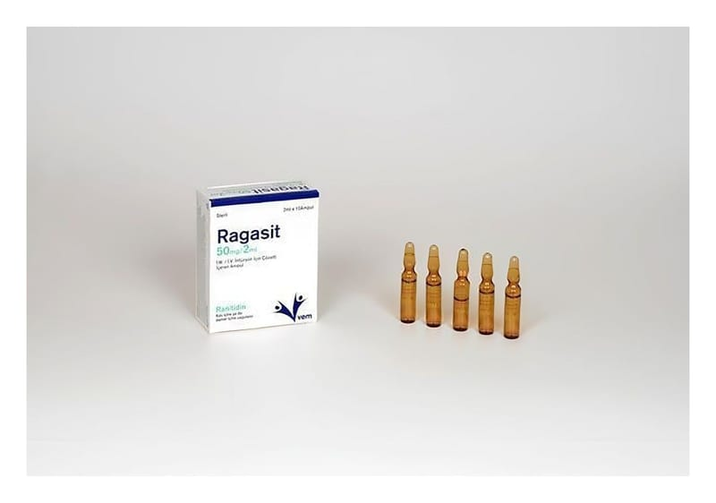

Ragasit 50 mg/2 ml IM/IV İnfüzyon İçin Çözelti İçeren Ampul, 10 Adet

Ne için kullanılır
KT · Bölüm 1RAGASİT, etkin madde olarak her bir ampulde 50 mg ranitidine eşdeğer miktarda ranitidin hidroklorür içerir. Ranitidin, H
-reseptör antagonistleri olarak adlandırılan ilaç grubuna dahildir. Bu ilaçlar midenizdeki asit miktarını azaltır. Bu ilacı kullanmaya başlamadan önce KULLANMA TALİMATINI dikkatlice okuyunuz, çünkü sizin için önemli bilgiler içermektedir. Bu kullanma talimatını saklayınız. Daha sonra tekrar okumaya ihtiyaç duyabilirsiniz. Eğer ilave sorularınız olursa, lütfen doktorunuza veya eczacınıza danışınız. Bu ilaç kişisel olarak size reçete edilmiştir, başkalarına vermeyiniz. Bu ilacın kullanımı sırasında doktora veya hastaneye gittiğinizde doktorunuza bu ilacı kullandığınızı söyleyiniz. Bu talimatta yazılanlara aynen uyunuz. İlaç hakkında size önerilen dozun dışında yüksek veya düşük doz kullanmayınız.
RAGASİT, renksiz veya açık sarı renkte berrak bir çözeltidir. Kas içine veya damar içine uygulanmak üzere her biri 2 ml çözelti içeren 10 ampullük ambalajlarda piyasaya sunulmuştur. RAGASİT erişkinlerde (yaşlılar dahil) aşağıdaki durumlarda kullanılır: Midedeki ya da midenin boşaldığı barsak bölümündeki (onikiparmak barsağı) ülserlerin (mide barsak yüzeyinde oluşan yaraların) iyileştirilmesi ve sonlandırılması Ülser kanamalarının engellenmesi Yemek borusundaki (özofagus) asitten ya da midedeki fazla miktardaki asitten kaynaklanan rahatsızlıkların giderilmesi (bunların her ikisi de ağrıya veya hazımsızlık, sindirim bozukluğu ya da mide yanması olarak bilinen rahatsızlıklara yol açabilir). Ameliyat esnasında, anestezi süresince mideden yukarı doğru asit gelmesinin önlenmesi. RAGASİT çocuklarda (6 ay – 18 yaş arası) aşağıdaki durumlarda kullanılır: Midedeki ya da midenin boşaldığı barsak bölümündeki (onikiparmak barsağı) ülserlerin iyileştirilmesi Yemek borusundaki (özofagus) asitten ya da midedeki fazla miktardaki asitten kaynaklanan rahatsızlıkların iyileştirilmesi ve sona erdirilmesi (bunların her ikisi de ağrıya veya hazımsızlık, sindirim bozukluğu ya da mide yanması olarak bilinen rahatsızlıklara yol açabilir)